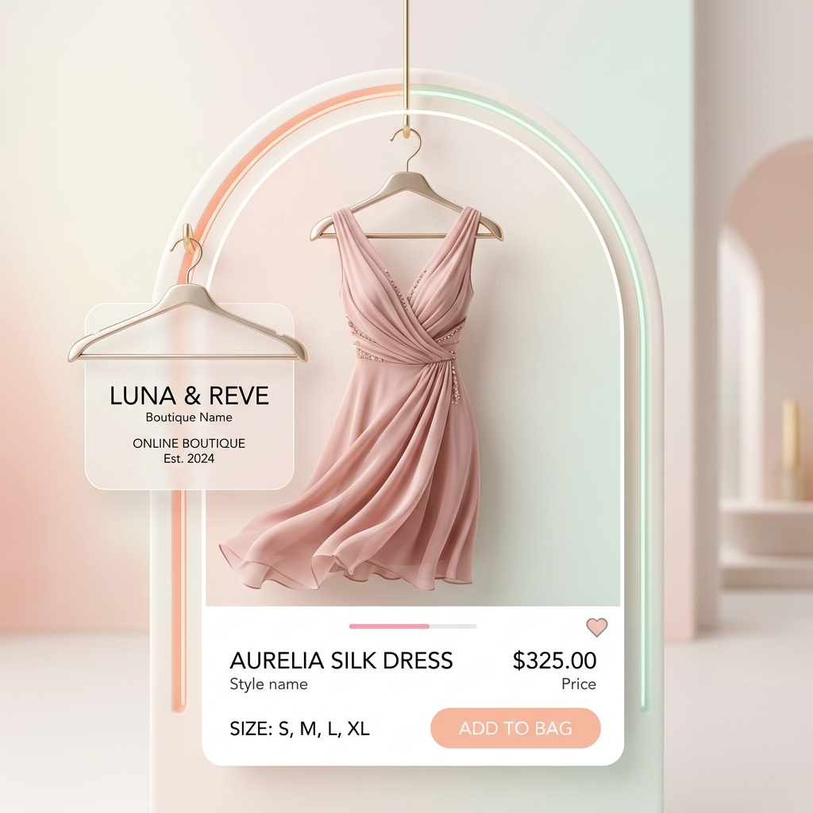

Hello, I'm
Mohammed Muzammil D R
CSE Graduate & Full Stack Developer
Skilled in Python, MySQL, and full-stack development with a keen interest in data analysis, software development, and web technologies. Passionate about solving problems and building innovative solutions.
Education & Experience
Bachelor of Engineering (CS)
Bearys Institute of Technology
2020 – 2024 | CGPA: 6.7
Comprehensive study in computer science fundamentals, software engineering, and data analysis.
Python Full Stack Developer
IPCS Global, Mangalore
Expected: Jun 2025
Professional certification program covering end-to-end web development using Python and modern frameworks.
Data Analyst Intern
Zephyrs Technologies Pvt Ltd
Aug 2023 – Sep 2023
Data cleaning, manipulation, visualization using Python, and designing data models for business insights.
My Skills
Programming
Technical
Soft Skills
Languages
Featured Projects

Driver Drowsiness Detection
Python, OpenCV
Designed a real-time alert system using computer vision techniques to detect drowsiness and prevent accidents.

Air Pollution Monitoring System
Python, Raspberry Pi, GSM, Blynk
Built an IoT-based environmental monitoring system for real-time air quality tracking and alert reporting.

Pizza Restaurant Website
Web Development
Developed a responsive website for a local pizza restaurant based in Hyderabad.
Open Website
Spotify Music App
Web Development
Built a music streaming application featuring a modern UI and audio playback functionality.

LUX LOOM
E-Commerce
Developed an online boutique dress website for a shop named LUX LOOM, featuring a product catalog.
Get In Touch
Contact Information
Feel free to reach out for collaborations or just a friendly chat.